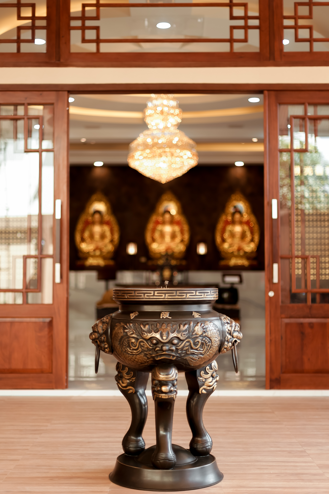

Konten menyusul
Dalam rangka menyambut tahun baru imlek 4720/2022, Vihara Ratana Stupa Agung memberikan kesempatan bagi Bapak/Ibu/Saudara/i untuk mempersembahkan pelita yang akan dinyalakan dan dipasangkan pada altar vihara. Paket pemasangan pelita imlek yang tersedia:
1. Pelita Bulanan (Dinyalakan Setiap Hari): Rp. 200.000,-
2. Pelita Tahunan (Dinyalakan Setiap Hari Uposatha atau setiap Che It & Cap Go): Rp. 300.000,-
3. Pelita Lampion (Dinyalakan Setiap Hari Uposatha atau setiap Che It & Cap Go) Rp. 200.000,-
Dana dapat disalurkan melalui:
BCA NO. 383-089-9005
A.N SHINTA CHELSIA OR CHAIRUDDIN KUSLAN
VIHARA RATANA STUPA AGUNG
Vihara Ratana Stupa Agung merayakan Hari Raya Imlek 4720/2022 pada:
1. Sa Cap Meh - Senin, 31 Januari 2022
pukul 22.00 WIB
Mata Acara:
Pendarasan Sutra Pertobatan
Renungan Imlek
Penyalaan Pelita Kesejahteraan
2. Che It - Selasa, 01 Februari 2022
pukul 10.00 WIB
Mata Acara:
Pembacaan Sutra Pertobatan kepada 88 Buddha
Info Lebih Lanjut:
Hubungi Vihara
0823-4271-1108
Kong Fo Cai Thien merupakan persembahan yang terbaik kepada Triratna dan para pelindung Dharma sebagai salah satu wujud syukur atas satu tahun yang telah berlalu dan tahun yang akan datang.
Kong Fo Cai Thien diadakan pada hari Minggu, 20 Februari 2022 pada pukul 09.00 WIB. Pendaftaran dan Info lebih lanjut dapat menghubungi Vihara (0823-4271-1108)
Dana dapat disalurkan melalui:
BCA NO. 383-089-9005
A.N SHINTA CHELSIA OR CHAIRUDDIN KUSLAN
VIHARA RATANA STUPA AGUNG

Umat Buddha di seluruh dunia pasti mengenal Dewi Guan Yin. Sosok yang lembut, welas asih terhadap
segala makhluk. Dewi Guan Yin semasa hidupnya sangat suka menolong orang-orang yang sedang
kesusahan. Beliau memiliki 12 ikrar besar yang salah satunya adalah jika seluruh umat manusia
tidak bisa kembali ke surga, maka Beliau bertekad untuk tidak menjadi Buddha.
APA SAJA 3
HARI BESAR DEWI GUAN YIN PHU SA?...
Apa itu Meditasi? Kenapa saya harus bermeditasi? Bagaimana cara saya melakukan hal yg disebut Meditasi ini? Mungkin pertanyaan-pertanyaan ini pernah muncul dalam benak anda (atau mungkin juga tidak). Dan Anda tidak berani untuk mengutarakan pertanyaan ini sehingga hal ini pun masih menjadi misteri bagi diri Anda sendiri...
Sangha adalah ladang yang subur untuk menanam jasa. Umat perumahtangga didorong untuk memberikan persembahan yang terbaik kepada anggota sangha. Ada empat kebutuhan pokok sangha yaitu tempa tinggal, pakaian, obat-obatan dan makanan. Dari empat kebutuhan ini, yang dapat sering didanakan dan dilakukan secara rutin adalah makanan. Ini berarti bahwa ketika setiap kali ada ...